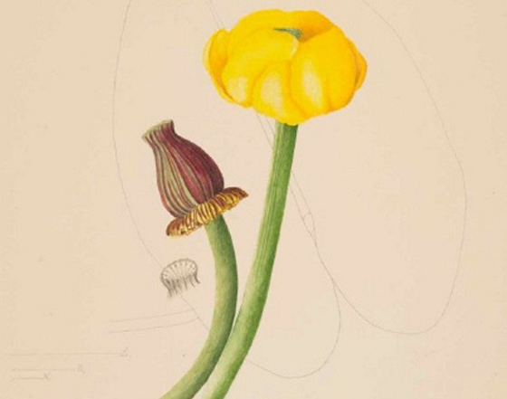

Bullhead pond lily, from “Plants and Flowers of Maine: Kate Furbish’s Watercolors”.3
Our project focuses on the dataset created from Bowdoin's collection of Kate Furbish's botanitcal drawings. Kate Furbish was a botanist from Brunswick, Maine.1 She lived from 1834 to 1931.2 Her dilligent, prolific cataloging of the flora of Maine while defying gender norms of her time marks Furbish as one of the unsung heros of botany. Her work is now largely curated at Bowdoin College, and can be seen on dipslay in Hawthorne-Longfellow Library. Our project uses a dataset that holds information on each sample in her catalogues, such as:
Location and year
Common and scientific labels (current and at time of discovery)